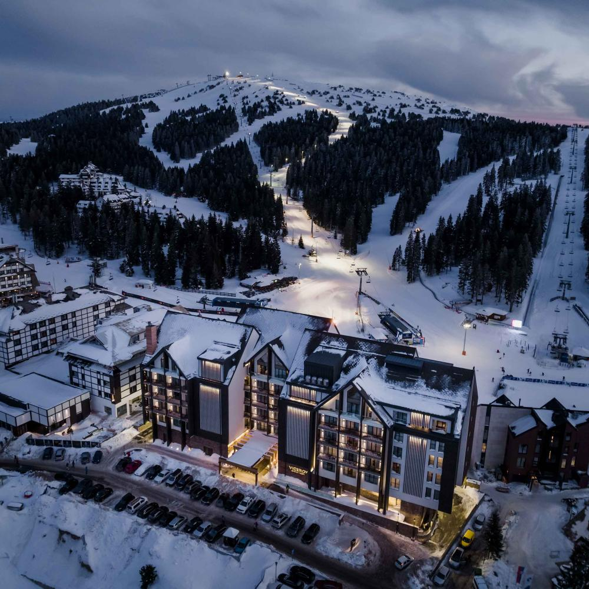

ЗИМСКА ПОНУДА

ЗИМСКА АВАНТУРА НА КОПАОНИК
Копаоник, Србија
09.02 - 14.02
Откријте ја зимската убавина на Копаоник, една од најпознатите зимски дестинации во Србија. Уживајте во снежните планини, одличните скијачки патеки и прекрасната зимска атмосфера. Идеална понуда за краток зимски одмор со многу скијање, забава и планинска авантура.
ЗИМСКА АВАНТУРА
Еден од најпознатите планински и зимски центри во Србија, познат по прекрасните снежни пејзажи, чистата планинска природа и богатата понуда на зимски активности. Туристичкиот центар нуди пријатна зимска атмосфера, бројни кафулиња, ресторани и продавници, како и одлични услови за одмор и уживање во планината.
Еден од најпопуларните скијачки центри во регионот, со уредени патеки и можности за скијање и сноуборд за различни нивоа на искуство. Посетителите можат да уживаат во зимските спортови, возењето со жичари и прекрасните панорамски погледи кон снежните предели на Копаоник.
Состанок со групата на автобуска станица во Скопје, 30 минути пред поаѓање. Поаѓање со организиран автобуски превоз кон Рашка. Потоа следи организиран автобуски превоз до хотелот во Копаоник. По пристигнувањето следуваат сместување во хотел и време за одмор. Во попладневните часови е предвидена кратка прошетка низ туристичкиот центар, со запознавање со околината и зимската атмосфера на планината. Вечерта е слободна за вечера и индивидуални активности. Ноќевање во хотел.
Појадок во хотелот и слободно претпладне за запознавање со туристичкиот центар. Следува прошетка низ централната зона, со време за кафе, шопинг и фотографирање на снежните планински предели. Во попладневните часови е предвидено слободно време за одмор или први зимски активности. Вечерта е слободна за вечера и уживање во планинската атмосфера. Ноќевање во хотел.
Појадок и заминување кон скијачките патеки. Денот е посветен на скијање и сноуборд во скијачкиот центар Копаоник. Туристите можат да изнајмат опрема и да ги користат уредените патеки според своето искуство и способности. За оние кои не скијаат е предвидено слободно време за прошетка, фотографирање и престој во планинските објекти. Во текот на денот е предвидено време за ручек. Во попладневните часови следува враќање во хотелот и одмор. Ноќевање во хотел.
Појадок во хотелот и организирано заминување кон повисоките делови на скијачкиот центар, согласно временските услови и работата на жичарите. Следува возење со жичара и уживање во панорамските погледи кон снежните предели на Копаоник. Предвидено е време за фотографирање и кратка зимска прошетка на достапните и безбедни делови. Потоа следува слободно време за ручек и одмор. Попладнето е слободно за индивидуални активности. Ноќевање во хотел.
Појадок и повторно заминување кон скијачката област. Денот е предвиден за дополнително скијање и сноуборд, со можност туристите да продолжат со зимските активности или да изберат полесна програма според сопствените интереси. За туристите кои не скијаат е предвидено слободно време за прошетка, кафе и уживање во снежната природа. Во попладневните часови следува враќање во хотелот. Вечерта е слободна за последна вечера и одмор. Ноќевање во хотел.
Појадок во хотелот и одјавување согласно предвиденото време. Следува кратка утринска прошетка низ туристичкиот центар и слободно време за кафе, фотографии и последен шопинг. Потоа следува собирање на групата и организирано поаѓање кон автобуската станица. По пристигнувањето на автобуската станица следува завршување на потребните процедури и поаѓање кон Скопје. По пристигнувањето и преземањето на багажот завршува организираното патување.